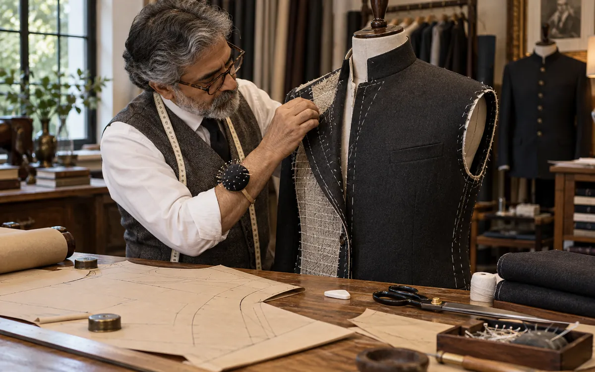

Design and production tools
Quick, practical calculators and planners for designers, students, D2C brands and production teams. The textile calculator is free for everyone; the pattern maker is free for signed-in Forecut members. Both run entirely in your browser: nothing you type is sent to us.
 Fabric, GSM, yarn & costingTextile calculator27 calculators: yarn counts in 15 systems, ply, twist and strength, reed, warp and weft, GSM and cover factor, knitting, consumption, markers, thread, SMV, dyeing, regain, costing and units.Open the tool →
Fabric, GSM, yarn & costingTextile calculator27 calculators: yarn counts in 15 systems, ply, twist and strength, reed, warp and weft, GSM and cover factor, knitting, consumption, markers, thread, SMV, dyeing, regain, costing and units.Open the tool →
Members · garments and Forecut detailsPattern makerDraft kurtas, shirts, blouses, dresses, skirts, lehengas, trousers and more from measurements or from a Forecut detail. Automatic fit checks, a how-to-measure guide, per-piece seam allowance and true-scale PDF, DXF, SVG and PNG downloads.Open the tool →What each tool is for
The textile calculator answers the questions that come up every day between a design team and a fabric supplier: how many metres to order for a run of kurtas, what a 180 GSM fabric weighs per metre, what a price per kilo means per metre, how a 40s cotton compares with a 150 denier polyester, how much to allow for shrinkage, and what a garment must sell for once fabric, trims, making, margins and GST are added.
The pattern block maker drafts simple blocks from your own measurements: a kurta or tunic front and back with a sleeve whose cap is matched to the armhole, and a straight or A-line skirt with darts. Blocks are drawn at true scale in centimetres, so you can download them as SVG for a plotter or print them on A4 sheets and tape them together. They are starting points for a first toile, not finished production patterns.
How accurate are they?
Formulas such as GSM, yarn count and weight conversions are exact. Fabric consumption figures are typical industry estimates for a size M garment and change with style, fabric direction, prints that need matching and how tightly a marker is laid, so treat them as a planning figure and confirm with your cutting master or CAD marker before ordering bulk. Pattern blocks use standard, simplified drafting and should always be tested in calico or muslin first.
How to use the tools in a real range plan
Most teams use the two tools at different points in the same job. Early in a season, when a Forecut detail such as a drawcord hem or a balloon trouser is chosen for a range, the pattern maker gives a quick first block so the design team can see proportions on paper before a sampling room is booked. Once the fabric is shortlisted, the textile calculator turns the supplier's quote into numbers the team can compare: price per metre to price per garment, GSM to weight per metre, and yarn count to the count system your mill uses. The final step is costing, where fabric, trims, making and margin are added up to check that the style can sell at its target price.
Reading the numbers by region
- India and South Asia: mills usually quote cotton in Ne counts, GSM and price per metre or per kilo; the calculator converts between these directly, and the rupee costing view includes a GST line to fill in.
- Europe: wool and worsted qualities are often given in Nm and grams per running metre; switch the weight box to g/m to compare like for like.
- North America: denim and knits are often quoted in ounces per square yard and yards; set the units to imperial and the results stay in step.
- East Asia: filament yarns are usually in denier or dtex; the yarn converter handles both alongside spun counts.
Common questions
Do I need an account? No for the textile calculator. The pattern maker needs a free Forecut sign-in so we can keep the tool free while it is being fit-tested.
Can I use the results with a factory? Yes, as planning figures. Exact formulas (GSM, counts, conversions) can be shared as they are; consumption and marker figures should be checked against your factory's own marker before bulk fabric is ordered.
Do the tools work offline or on a phone? They run in the browser, so once a page has loaded the calculations work without a connection, and the layout adapts to phone screens.
Are my measurements stored? Measurements and quotes stay in your browser; nothing you type is sent to Forecut.
Ideas for another tool? Write to hello@forecut.in.